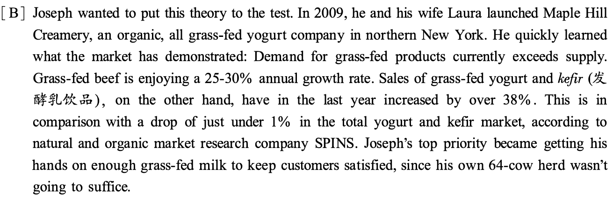
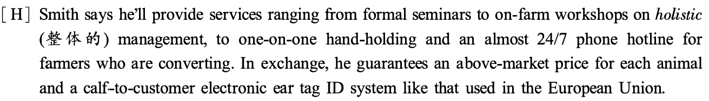
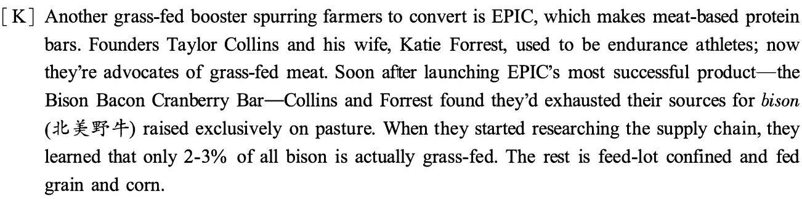
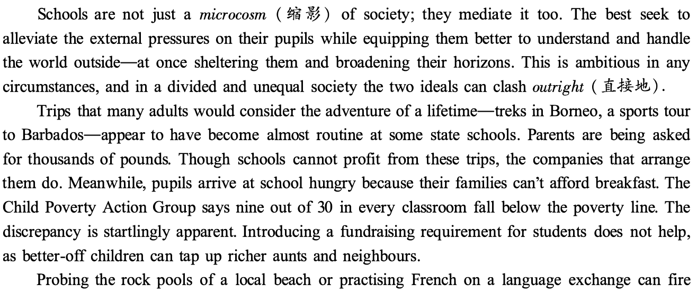
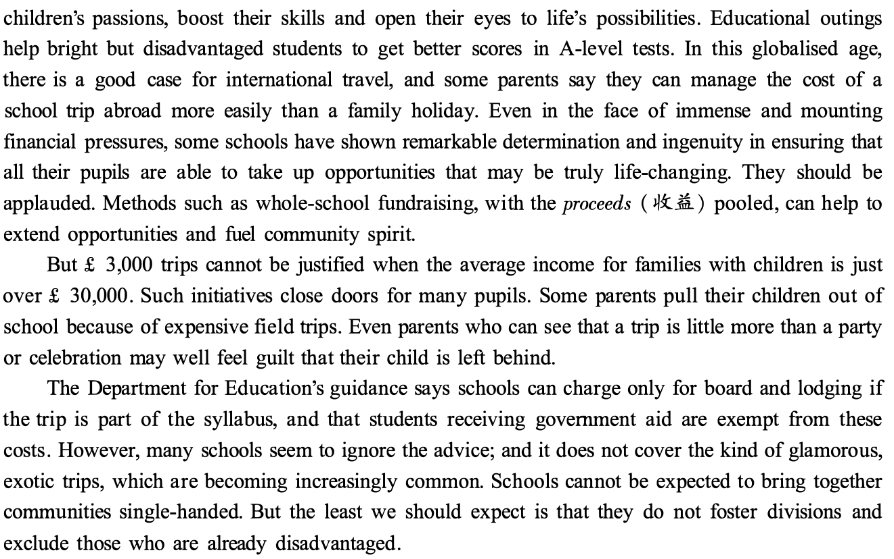
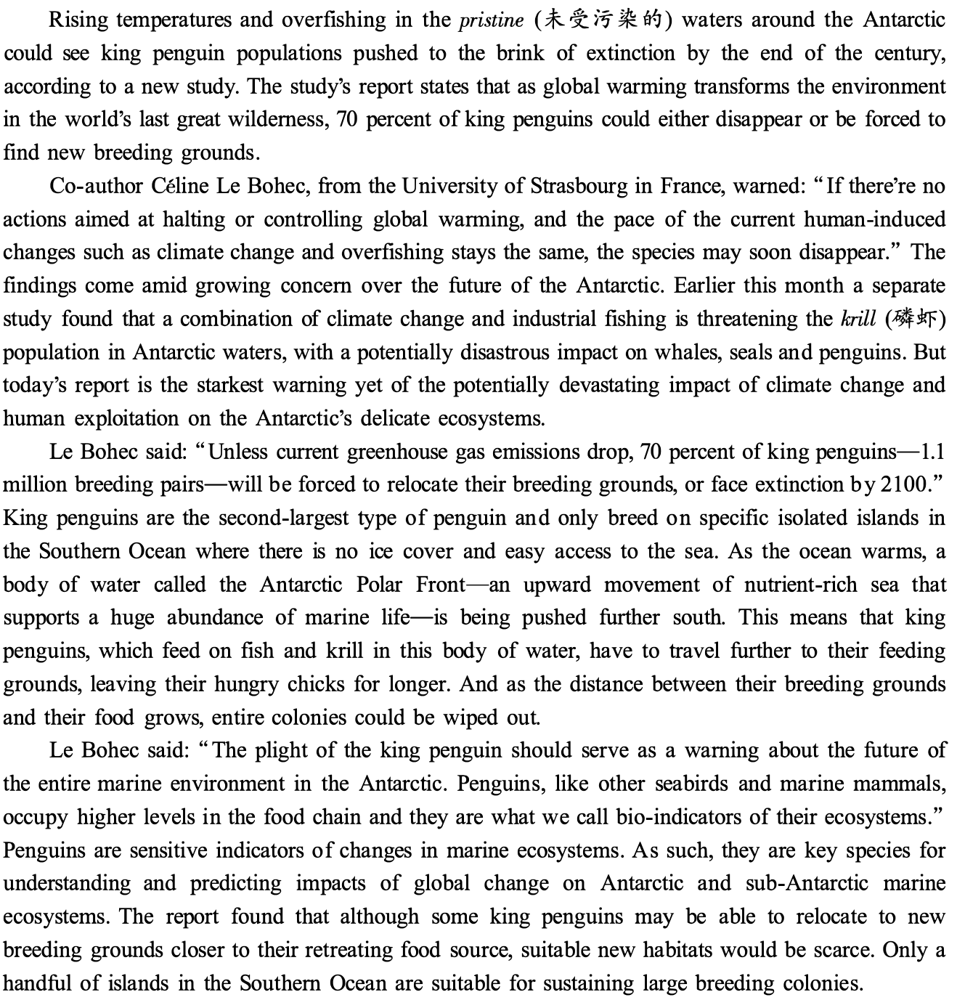
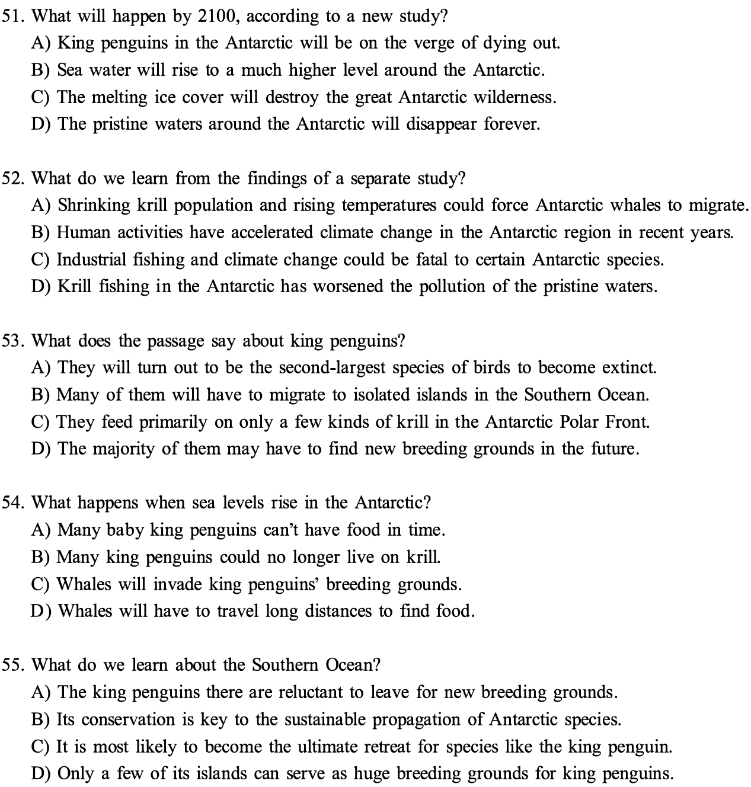
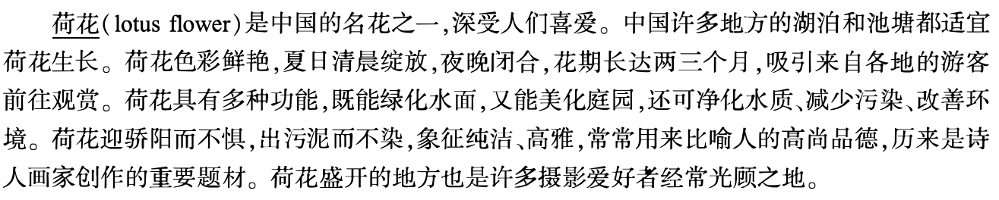

第 36 题 #
36. Farmers going grass-fed are not affected by the ever-changing milk prices of the global market.
点击查看答案
此题暂无可用答案。
大学英语六级 · questions · 2019
题号和章节目录由结构化数据生成。选项按卷面字母顺序显示；原标记保留在 JSON 中。
本页部分文字层异常，已保留原图文字区域；这些区域随窗口缩放，暂不能重新换行或复制。
Directions : In this section , there is a passage with ten blanks. You are required to select one word for
each blank from a list of choices given in a word bank following the passage. Read the
by a letter. Please mark the corresponding letter for each item on Answer Sheet 2 with a
single line through the centre. You may not use any of the words in the bank more than once.
The number of devices you can talk to is multiplying-first it was your phone, then your car, and now you can tell your kitchen appliances what to do. But even without gadgets that understand our spoken commands, research suggests that, as bizarre as it sounds, under certain 26 , people regularly ascribe human traits to everyday objects.
Sometimes we see things as human because we are 27 . In one experiment, people who reported feeling isolated were more likely than others to attribute 28 to various gadgets. In tum, feeling close to objects can 29 loneliness. When college students were reminded of a time they had been 30 in a social setting, they compensated by exaggerating their number of friends-unless they were first given tasks that caused them to interact with their phone as if it had human qualities. According to the researchers, the participants' phones 3 1 substituted for real friends.
At other times, we personify products in an effort to understand them. One study found that three in four respondents yelled at their computer. Further, the more their computer gave them problems, the more likely the respondents were to report that it had its own " beliefs and 32
So how do people assign traits to an object? In part, we rely on looks. On humans, wide faces are 33 with dominance. Similarly, people rated cars, clocks, and watches with wide faces as more dominant-looking than narrow-faced ones, and preferred them-especially in 34 situations. An analysis of car sales in Germany found that cars with grilles ( ctt ,#JJt) that were upturned like smiles sold best. The purchasers saw this 35 as increasing a car's friendliness.
第 1／9页
本页部分文字层异常，已保留原图文字区域；这些区域随窗口缩放，暂不能重新换行或复制。
Directions : In this section , you are going to read a passage with ten statements attached to it. Each
statement contains information given in one of the paragraphs. Identify the paragraph from
which the information is derived. You may choose a paragraph more than once. Each
paragraph is marked with a letter. Answer the questions by marking the corresponding letter
on Answer Sheet 2.
Why More Farmers Are Making The Switch to Grass-Fed Meat and Dairy
[ A] Though he didn't come from a farming family, from a young age Tim Joseph was fascinated by
the idea of living off the land. Reading magazines like The Stockman Grass Farmer and Graze, he got hooked on the idea of grass-fed agriculture. The idea that all energy and wealth comes from the sun really intrigued him. He thought the shorter the distance between the sun and the end product, the higher the profit to the farmer.

[ C] His first partnership was with Paul and Phyllis Amburgh, owners of the Dharma Lea farm in
New York. The Amburghs, too, were true believers in grass-fed. In addition to supplying milk from their own 85-head herd, they began to help other farmers in the area convert from conventional to certified organic and grass-fed in order to enter the Maple Hill supply chain.
第 2／9页
Since 20 10, the couple has helped 125 small dairy farms convert to grass-fed, with more than 80% of those farms corning on board during the last two years.
[ D] All this conversion has helped Maple Hill grow 40-50% every year since it began, with no end
in sight. Joseph has learned that a farmer has to have a certain mindset to successfully convert. But convincing open-minded dairy people is actually not that hard, when you look at the economics. Grass-fed milk can fetch up 2.5 times the price of conventional milk. Another factor is the squeeze that conventional dairy farmers have felt as the price of grain they feed their cows has gone up, tightening their profit margins. By replacing expensive grain feed with regenerative management practices, grass-fed farmers are insulated from jumps in the price of feed. These practices include grazing animals on grasses grown from the pastureland's natural seed bank, and fertilized by the cows' own fertilizer.
[ E] Champions of this type of regenerative grazing also point to its animal welfare, climate and
health benefits: Grass-fed animals live longer out of confinement. Grazing herds stimulate microbial (,{;ft ± 4h al.] ) activity in the soil, helping to capture water and separate carbon. And grass-fed dairy and meat have been shown to be higher in certain nutrients and healthy fats.
[ F ] In the grass fed system, farmers are also not subject to the wildly fluctuating milk prices of the
international commodity market. The unpredictability of global demand and the lag-time it takes to add more cows to a herd to meet demand can result in events like the recent cheese surplus. Going grass-fed is a safe refuge, a way for family-scale farms to stay viable. Usually a farmer will get to the point where financially, what they're doing is not working. That's when they call Maple Hill. If the farm is well managed and has enough land, and the desire to convert is sincere, a relationship can begin. Through regular regional educational meetings, a large annual meeting, individual farm visits and thousands of phone calls, the Amburghs pass on the principles of pasture management. Maple Hill signs a contract pledging to buy the farmer's milk at a guaranteed base price, plus quality premiums and incentives for higher protein, butter-fat and other solids.
[ G] While Maple Hill's conversion program is unusually hands-on and comprehensive, it's just one
of a growing number of businesses committed to slowly changing the way America farms. Joseph calls sharing his knowledge network through peer-to-peer learning a core piece of the company's culture. Last summer, Massachusetts grass-fed beef advocate John Smith launched Big Picture Beef, a network of small grass-fed beef farms in New England and New York that is projected to bring to market 2,500 head of cattle from 125 producers this year. Early indications are that Smith will have no shortage of farm members. Since he began to informally announce the network at farming conferences and on social media, he's received a steady stream of inquiries from interested farmers.
第 3／9页
本页部分文字层异常，已保留原图文字区域；这些区域随窗口缩放，暂不能重新换行或复制。

[ I] Though advocates portray grass fed products as a win-win situation for all, they do have
downsides. Price, for one, is an issue. Joseph says his products are priced 10-20% above organic versions, but depending on the product chosen, compared to non-organic conventional yogurt, consumers could pay a premium of 30-50% or more for grass-fed. As for the meat, Smith says his grass-fed hamburger will be priced 20-25% over the conventional alternative. But a look at the prices on online grocer Fresh Direct suggests a grass-fed premium of anywhere from 35-60% .
[ J] And not every farmer has the option of going grass-fed. For both beef and dairy production it
requires, at least in the beginning, more pastureland. Grass-fed beef production tends to be more labor-intensive as well. But Smith counters that if you factor in the hidden cost of government corn subsidies, environment degradation, and decreased human heath and animal welfare, grass fed is the more cost-effective model. " The sun provides the lowest cost of production and the cheapest meat," he says.

[ L] But after General Mills bought EPIC in 2016, Collins and Forrest suddenly had the resources
they needed to expand their supply chain. So the company teamed up with Wisconsin-based rancher Northstar Bison. EPIC fronted the money for the purchase of $ 2.5 million worth of young bison that will be raised according to its grass-fed protocols, with a guaranteed purchase price. The message to young people who might not otherwise be able to afford to break into the business is," ' You can purchase this $ 3 million piece of land here, because I'm guaranteeing you today you'll have 1 ,000 bison on it.' We're bringing new blood into the old, conventional farming ecosystem, which is really cool to see," Collins explains.
36. Farmers going grass-fed are not affected by the ever-changing milk prices of the global market.
此题暂无可用答案。
37. Over the years, Tim Joseph's partners have helped many dairy farmers to switch to grass-fed.
第 4／9页
本页部分文字层异常，已保留原图文字区域；这些区域随窗口缩放，暂不能重新换行或复制。
此题暂无可用答案。
38. One advocate believes that many other benefits should be taken into consideration when we assess
the cost-effectiveness of grass-fed farming.
此题暂无可用答案。
39. Many dairy farmers were persuaded to switch to grass-fed when they saw its advantage in terms
of profits.
此题暂无可用答案。
40. Tim Joseph's grass-fed program is only one example of how American farming practice is
changing.
此题暂无可用答案。
41 . Tim Joseph was fascinated by the notion that sunlight brings energy and wealth to mankind.
此题暂无可用答案。
42. One problem with grass-fed products is that they are usually more expensive than conventional
ones.
此题暂无可用答案。
43. Grass fed products have proved to be healthier and more nutritious.
此题暂无可用答案。
44. When Tim Joseph started his business, he found grass-fed products fell short of demand.
此题暂无可用答案。
45. A snack bar producer discovered that the supply of purely grass-fed bison meat was scarce.
此题暂无可用答案。
Directions : There are 2 passages in this section. Each passage is followed by some questions or unfinished statements. For each of them there are four choices marked A ) , B ) , C ) and
Questions 46 to 50 are based on the following passage.

第 5／9页
本页部分文字层异常，已保留原图文字区域；这些区域随窗口缩放，暂不能重新换行或复制。

46. What does the author say best schools should do?
此题暂无可用答案。
47. What does the author think about school field trips?
此题暂无可用答案。
48. What does the author suggest can help build community spirit?
此题暂无可用答案。
49. What do we learn about low-income parents regarding school field trips?
第 6／9页
本页部分文字层异常，已保留原图文字区域；这些区域随窗口缩放，暂不能重新换行或复制。
此题暂无可用答案。
50. What is the author's expectation of schools?
此题暂无可用答案。
Questions 51 to 55 are based on the following passage.

第 7／9页
本页部分文字层异常，已保留原图文字区域；这些区域随窗口缩放，暂不能重新换行或复制。

51. What will happen by 2100, according to a new study?
此题暂无可用答案。
52. What do we learn from the findings of a separate study?
此题暂无可用答案。
53. What does the passage say about king penguins?
此题暂无可用答案。
54. What happens when sea levels rise in the Antarctic?
此题暂无可用答案。
55. What do we learn about the Southern Ocean?
此题暂无可用答案。
Directions : For this part , you are allowed 30 minutes to translate a passage from Chinese into
English. You should write your answer on Answer Sheet 2.

第 8／9页
本页部分文字层异常，已保留原图文字区域；这些区域随窗口缩放，暂不能重新换行或复制。
Directions : For this part , you are allowed 30 minutes to write an essay on the importance of
having a sense of community responsibility. You should write at least 150 words but
no more than 200 words.
第 9／9页